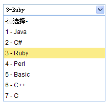

可装载组合框
继承$.fn.combo.defaults，可以使用combo的属性和方法，具体参考combo.html . 使用$.fn.combobox.defaults重载默认值。
依赖关系
- 自定义组合框
使用示例
combobox changedict使用方法
1.使用标签创建，对input或select标签引用"kjaxui-combobox"类。<select class="kjaxui-combobox" style=width:200px> <option> item1 <option> <option> item2 <option> <option> item3 <option> <option> item4 <option> <option> item5 <option> </select>
<input id="cc" class="kjaxui-combobox">2.使用脚本创建。
<input id="cc"> $("#cc").combobox({ url: 'combobox_data.json', valueField: 'id', textField: 'text' });
json数据格式:
[{
"id":1,
"text":"text1"
},{
"id":2,
"text":"text2"
},{
"id":3,
"text":"text3",
"selected":true
},{
"id":4,
"text":"text4"
},{
"id":5,
"text":"text5"
}]
属性
继承自定义组合框的属性, 以下是可装载组合框的独有属性。
| 名称 | 类型 | 描述 | 默认值 |
|---|---|---|---|
| valueField（值域） | string（字符串） | 绑定到组合框下的数据的值域的名称。 | value |
| textField（文本域） | string（字符串） | 绑定到组合框下数据的文本域的名称。 | text |
| url（超链接地址） | string（字符串） | 可供载入数据列表的远程地址。 | null |
| method（方法） | string（字符串） | 获取数据的HTTP方法。 | post |
| data（数据） | array（数组） | 将被载入的数据列表。 |
null |
| showCode（显示数据代码） | boolean（布尔型） | 为true时显示数据前面的代码号，为false则不显示。 | false |
| dict（数据字典） | string（字符串） | 将被载入数据的数据字典。 | |
| kjaxdict（数据字典对象） | string（字符串） | 数据字典所在的对象。 | kjaxdict |
| valuelist（初始化数据） | string（字符串） | 初始化时填充的数据。 | |
| value（默认选中数据） | string（字符串） | 初始化时默认选中的数据。 | |
| sid（市下拉框的id） | string（字符串） | 省市下拉框时，省下拉框配置的sid为市下拉框的id。 | |
| editable（是否可编辑） | boolean（布尔型） | 定义用户是否可以直接向组合框输入内容。 |
false |
事件
事件继承自定义组合框，以下是可装载组合框的独有事件。
| 名称 | 参数 | 描述 |
|---|---|---|
| onBeforeLoad | param | 在加载数据请求前触发，反回false将取消加载行为。 |
| onLoadSuccess | none | 当远程数据载入成功时触发。 |
| onLoadError | none | 当远程数据载入错误时触发。 |
| onSelect | record | 当用户选择一个列表项时触发。 |
| onUnselect | record | 当用户取消选择一个列表项时触发。 |
方法
方法继承自定义组合框，以下是可装载组合框独有的或者重载自定义组合框的方法。
| 名称 | 参数 | 描述 |
|---|---|---|
| options | none | 返回属性对象。 |
| getData | none | 返回已载入的数据。 |
| loadData | data | 载入本地数据列表。 |
| reload | url | 请求远程数据列表。 |
| setValues | values | 设置组合框的值，参数values是一个数组。
$('#cc').combobox('setValues', ['001','002']);
|
| setValue | value | 设置组合框的值。
$('#cc').combobox('setValues', '001');
|
| clear | none | 清除组合框的值。 |
| select | value | 选择特定的项目。 |
| unselect | value | 取消选择特定的项目。 |
| setDict | value | 设置组合框的数据字典。 |